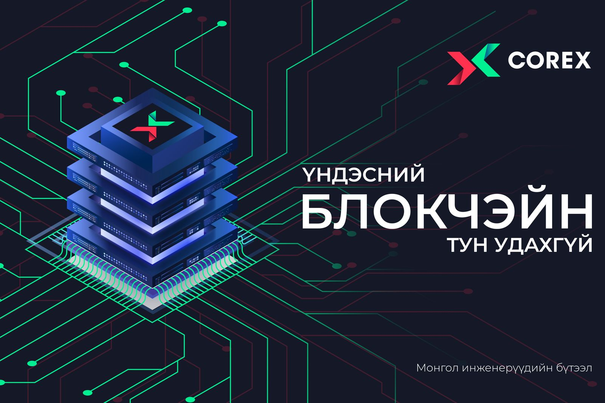

Ikon мэдээллийн сайтэд тавтай морил
|
Г.Чингис: Гэнэт л АНУ-ын Ерөнхийлөгчийн нэрэмжит шагналыг олгохоор боллоо гэхэд үнэхээр баярласан АНУ-ын Чикаго хотод ажиллаж, амьдарч буй Г.Чингис хэмээх хөдөлмөрч залуутай томилолтоор явж байхдаа тааралдсан юм. Тэрбээр тус хотод ирээд 14 жил болж байгаа ч эх орноо гэсэн сэтгэлээ хаяж чадахгүй монгол хүүхдүүдийн оюун ухааныг хөгжүүлэх зорилго өвөртлөн олон нийтийн соёлын болон боловсролын ажлууд санаачлан хийж АНУ-ын ерөнхийлөгчийн нэрэмжит шагнал хүртсэн, төрийнхөө далбааг өндөрт мандуулж үзсэн гээд хоббигоороо олон зүйл хийж буйгаа ярьсан юм. |
COREX үндэсний блокчэйн тун удахгүй

Саяхныг хүртэл аливаа критик мэдээллийг (тухайлбал эд хөрөнгө, санхүү, бүртгэлтэй холбоотой мэдээлэл) төвлөрсөн байдлаар хадгалж, хамгаалж ирсэн. Гэтэл ийм төвлөрсөн системийн сул талууд цөөнгүй ажиглагдах болсон. Бүртгэлийн санг тархмал, аливаа давуу эрхтэй төвлөрсөн оролцогч байхгүйгээр peer-to-peer (ижил зиндааны оролцогч хооронд) байдлаар зохион байгуулах, ингэхдээ мэдээллийн цор ганц, бүрэн бүтэн байдал, оролцогч бүрийн тэгш эрхийг хангах зэрэг нь тулгамдсан асуудал болон хувираад байна.
Илон Маск криптовалютыг зохицуулах шаардлагагүй, “чөлөөтэй нисгэх хэрэгтэй” гэв
Мягмар гарагт Лос Анжелес хотод болсон Code Conference арга хэмжээнд оролцохдоо тэрбумтан Илон Маск криптовалютын ирээдүйн талаар байр сууриа илэрхийлжээ.
Энэ үеэр тэр АНУ-ын эрх баригчид уг шинэ салбарыг зохицуулах шаардлагагүй, зөнд нь орхих хэрэгтэйг хэлсэн байна.
Өнөөдөр дархлаажуулалтын 24 цэг 09:00-17:00 цагт ажиллана Вакцинжуулалт эхэлснээс хойш нийслэлийн нийт хүн амын I тунгийн хамралт 74.5 хувь, II тунгийн хамралт 70.6 хувь, нэмэлт тунгийн хамрагдалт 16 хувь байна. Вакцинжуулалт эхэлснээс хойш нийслэлийн нийт хүн амын I тунгийн хамралт 74.5 хувь, II тунгийн хамралт 70.6 хувь, нэмэлт тунгийн хамрагдалт 16 хувь байна.Зорилтот бүлгийн буюу 2,909 жирэмсэн эх, 12-15 насны 66,686, 16-17 насны 26,224 хүүхэд тус тус дархлаажуулалтын бүрэн тунд хамрагдсан хэмээн Нийслэлийн Онцгой комиссоос мэдээлэв |
Эхлэл
Ковид-19
Улс төр
Эдийн засаг
Нийгэм
Эрүүл мэнд
Дэлхий дахин
Хэрэглэгч